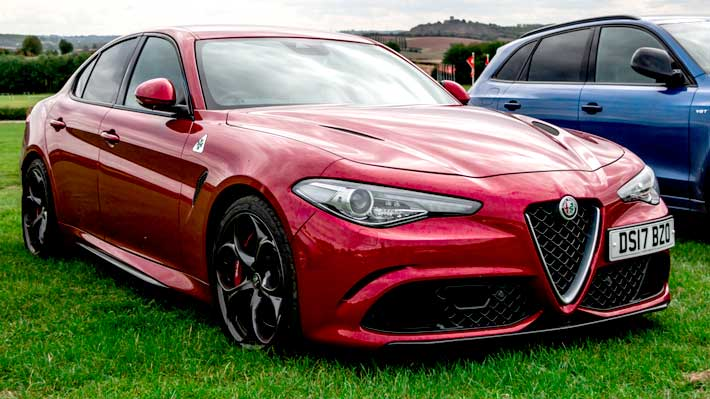
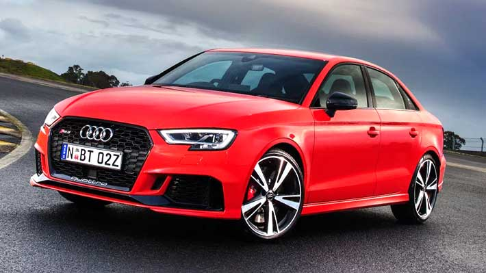
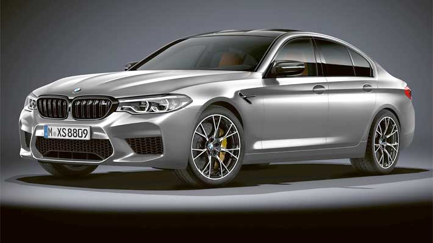
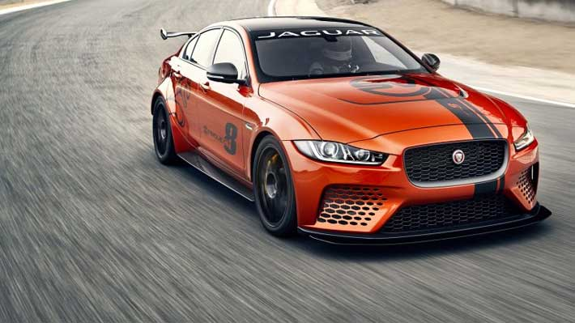
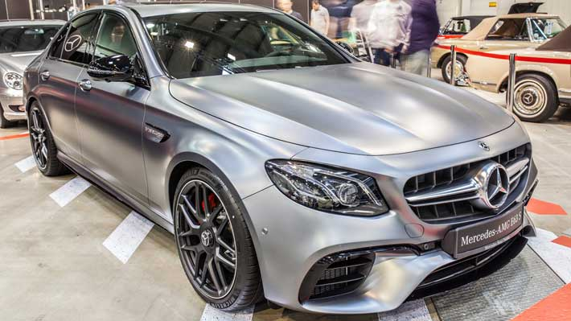

Este modelo italiano de tracción trasera no tiene nada que envidiarle a cualquier vehículo deportivo de alta gama, especialmente cuando se habla de aceleración. Y es que el Giulia esconde debajo de su capó un motor V6 biturbo de 2.9 litros que viene de Ferrari. Este propulsor ofrece 505 CV y una ingeniería de vanguardia que le permite saltar de 0 a 100 km/h en tan solo 3.8 segundos. De hecho, el Alfa Romeo Giulia Quadrifoglio es el sedan de producción más rápido que alguna vez haya corrido en la legendaria pista de Nurburgring. Es tanta su aceleración que incluso supera al Lexus LFA y al Lamborghini Gallardo LP570-4 Superleggera.
Lo primero que salta a la vista con este modelo de la marca alemana de los anillos es que su diseño combina a la perfección la carrocería del A3 con líneas deportivas que revelan su ADN de velocidad. Su poderoso motor de 2.5 litros y cinco cilindros turboalimentado eroga 400 caballos de potencia que lo dispara de 0 a 100 km/h en tan solo 3,9 segundos. Esto se logra en gran medida a que su moderno propulsor está asociado a un cambio S Tronic de siete marchas y la tracción quattro. Esto le permite al Audi RS3 Sedán tener un control preciso de la potencia que envía a cada rueda.
Este modelo de la automotriz de alta gama alemana es un claro ejemplo de cómo un auto sedan puede también ser un rayo en la pista. Posee el moderno sistema de tracción total M-xDrive y su motor es un V8 de 4.4 litros biturbo que genera 625 CV, que le permite salta de 0 a 100 km/h en impresionantes 3,1 segundos. Según medios especializados la última versión de este modelo de BMW es aún mejor que sus antecesores ya que viene con una suspensión más firme y geometrías nuevas para la caída de sus neumáticos, ofreciendo una barra estabilizadora más rígida, nuevos soportes para su motor y nuevas rótulas para la suspensión.
Lo primero que se tiene que decir de este sedán deportivo inglés es que aún se mantiene como un prototipo. No obstante, la empresa ya anunció que hará una edición limitada de 300 unidades de este coche pensado y desarrollado por el departamento de Operaciones Especiales de Vehículos Jaguar. Los ingenieros a cargo del proyecto dotaron al XE SV Project 8 con un motor V8 de 5.0 litros sobrealimentado que eroga 592 caballos de potencia. Tiene además tracción integral con desviación trasera y una suspensión diseñada exclusivamente para este proyecto y que ofrece altos niveles de agarre. Su bajo peso, gracias al uso de fibra de carbono, también es un factor a tener en cuenta. Todas estas características hace que este auto vaya de 0 a 100 km/h en solo 3.3 segundos para ir a una velocidad máxima de 320 km/h. De hecho en la pista de Nurburgring (Alemania) completó el circuito en 7 minutos, 21,2 segundos, es decir más rápido que un espectacular Ferrari 488 GTB, un Dodge Viper o un Ferrari Enzo.
Se trata del Clase E más potente fabricado alguna vez por Mercedes-Benz y esto se debe en gran medida a que este sedán utiliza el mismo motor V8 de 4.0 litros que el Mercedes S63, además de la misma caja de cambios. El motor del AMG E63 S le permite a su conductor disponer de increíbles 612 CV para ir de 0 a 100 km/h en tan sólo 3.3 segundos.
Derechos Reservados 2022 ©